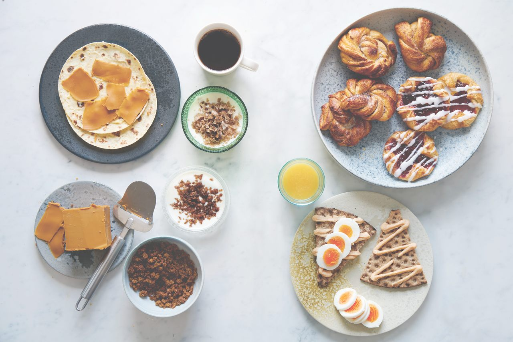

Breakfast from all Around the World
Quick Overiew of Morning Meals
Breakfast routines vary significantly across different cultures and regions. However, they serve the same purpose of providing necessary nutrients and energy to start the day. Some cultures prefer light breakfast such as fruits, pastries, or a coffee. Whearas, others are more heavy and savory, including items like eggs, meats, and breads.
Climate has a signficant impact on breakfast traditions. In colder regions, people usually consume warm and hearty meals to sustain warmth and energy throughout the day. In contrast, warmer climates often favor lighter and cooler breakfast options to help combat the heat. Seasonal availability of ingredients also influences breakfast choices, with fresh fruits and vegetables being more prevalent during their respective harvest seasons.


Breakfast Traditions Around the World
| Country | Common Breakfast Foods | Common Drink |
|---|---|---|
| United States | Toast, eggs, bacon, pancakes | Coffee, orange juice |
| Japan | Rice, miso soup, grilled fish | Green tea |
| France | Baguette, croissants, cheese | Coffee, wine |
| Mexico | Chilaquiles, huevos rancheros, tamales | Coffee, horchata |
| India | Idli, dosa, sambar, chai | Chai |